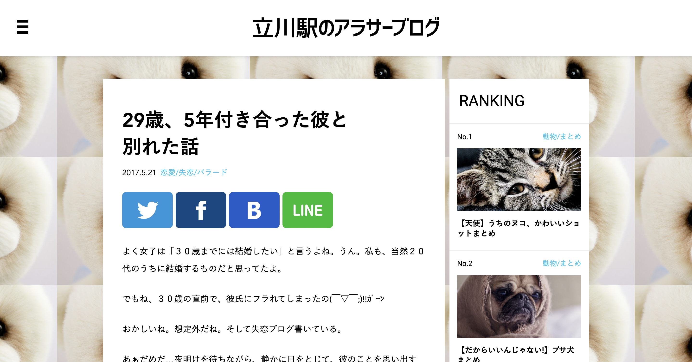
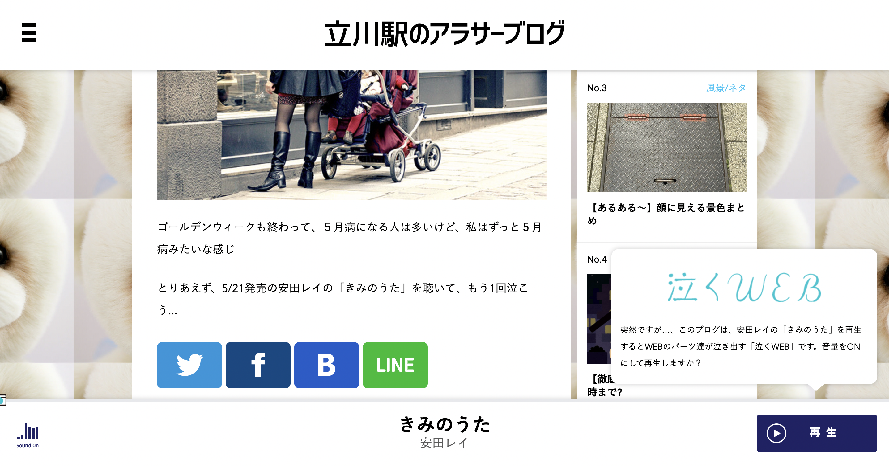

ページの最初
ページの最後

日本デザインセンターの創立60年の展覧会を中心としたサイト。
このWEBページは、安田レイという歌手の新曲「きみのうた」のプロモーションのために制作された。
最初は一見普通の失恋したアラサー女子ブログに見えるが、このWebページが他と異なる点は、ブログを読み終わると「きみのうた」の再生ボタンが現れる。
このWEBページは、安田レイという歌手の新曲「きみのうた」のプロモーションのために制作された。 最初は一見普通の失恋したアラサー女子ブログに見えるが、このWebページが他と異なる点は、ブログを読み終わると「きみのうた」の再生ボタンが現れる。